close all;
clear all;
clc;
N = 1;
p = 0.5;
n = 1;
m = 1000;
mseML = zeros(n,m);
mseCP = zeros(n,m);
iterations = 100;
a = 3;
b = 3;
x=0:0.01:1;
prior = betapdf(x,a,b);
figure
plot(prior)
title('Binomial Conjugate Prior');
ylabel('Likelihood');
xlabel('Number of Measurements');
for i = 1:iterations
z = binornd(N,p,[n,m]);
num1 = 0;
avgML = ones(n,m);
avgCP = ones(n,m);
for j = 1:m
if z(j) == 1
num1 = num1 + 1;
end
if j ~= 1
avgML(j) = (avgML(j-1)*(j-1)+z(j))/j;
else
avgML(j) = z(j);
end
avgCP(j) = (num1+a)/(j+a+b);
end
...
seML = (N*p-avgML).^2;
mseML = mseML + seML;
seCP = (N*p-avgCP).^2;
mseCP = mseCP + seCP;
end
mseML = mseML./iterations;
mseCP = mseCP./iterations;
figure
x=0:1:100;
posterior1 = prior.*binopdf(x,100,avgCP(1));
plot(posterior1)
title('Binomial Posterior After 1 Sample');
ylabel('Likelihood');
xlabel('Mean');
figure
x=0:1:100;
posterior10 = prior.*binopdf(x,100,avgCP(10));
plot(posterior10)
title('Binomial Posterior After 10 Samples');
ylabel('Likelihood');
xlabel('Mean');
figure
x=0:1:100;
posterior50 = prior.*binopdf(x,100,avgCP(50));
plot(posterior50)
title('Binomial Posterior After 50 Samples');
ylabel('Likelihood');
xlabel('Mean');
figure
likelihood = binopdf(x,100,avgCP(m));
posteriorM = prior.*likelihood;
plot(posteriorM)
title('Binomial Final Posterior');
ylabel('Likelihood');
xlabel('Mean');
figure
plot(mseCP)
title('Binomial Error Using CP');
ylabel('Mean Square Error');
xlabel('Number of Measurements');
figure
plot(mseML)
title('Binomial Error Using ML');
ylabel('Mean Square Error');
xlabel('Number of Measurements');
mu = 50;
sigma = 5;
n = 1;
m = 100;
mseML2 = zeros(n,m);
mseCP2 = zeros(n,m);
iterations = 100;
sigmaN = 6;
mu0 = 40;
sigma0 = 6;
x=0:1:100;
prior2 = normpdf(x,mu0,sigma0);
figure
plot(prior2)
title('Gaussian Conjugate Prior');
ylabel('Likelihood');
xlabel('Mean');
for i = 1:iterations
zg = normrnd(mu,sigma,[n,m]);
avgML2 = ones(n,m);
avgCP2 = ones(n,m);
for j = 1:m
if j ~= 1
avgML2(j) = (avgML2(j-1)*(j-1)+zg(j))/j;
else
avgML2(j) = zg(j);
end
N = j;
avgCP2(j) = ((mu0*sigmaN)+(N*sigma0*avgML2(j)))/(N*sigma0+sigmaN);
end
seML2 = (mu-avgML2).^2;
mseML2 = mseML2 + seML2;
seCP2 = (mu-avgCP2).^2;
mseCP2 = mseCP2 + seCP2;
end
mseML2 = mseML2./iterations;
mseCP2 = mseCP2./iterations;
figure
x = 0:1:100;
N = 1;
posterior1 = normpdf(x,avgCP2(1),((sigmaN*sigma0)^2)/(sigmaN^2+ N*sigma0^2));
plot(posterior1)
title('Gaussian Posterior After 1 Sample');
ylabel('Likelihood');
xlabel('Mean');
figure
N = 10;
posterior10 = normpdf(x,avgCP2(10),((sigmaN*sigma0)^2)/(sigmaN^2+ N*sigma0^2));
plot(posterior10)
title('Gaussian Posterior After 10 Samples');
ylabel('Likelihood');
xlabel('Mean');
figure
N = 50;
posterior50 = normpdf(x,avgCP2(50),((sigmaN*sigma0)^2)/(sigmaN^2+ N*sigma0^2));
plot(posterior50)
title('Gaussian Posterior After 50 Samples');
ylabel('Likelihood');
xlabel('Mean');
figure
N = m;
posteriorM = normpdf(x,avgCP2(m),((sigmaN*sigma0)^2)/(sigmaN^2+ N*sigma0^2));
plot(posteriorM)
title('Gaussian Final Posterior');
ylabel('Likelihood');
xlabel('Mean');
figure
plot(mseCP2)
title('Gaussian Error Using CP');
ylabel('Mean Square Error');
xlabel('Number of Measurements');
figure
plot(mseML2)
title('Gaussian Error Using ML');
ylabel('Mean Square Error');
xlabel('Number of Measurements');
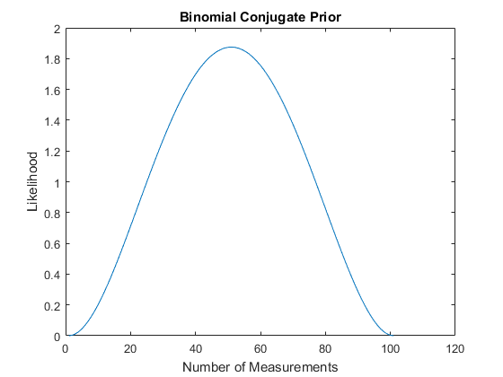 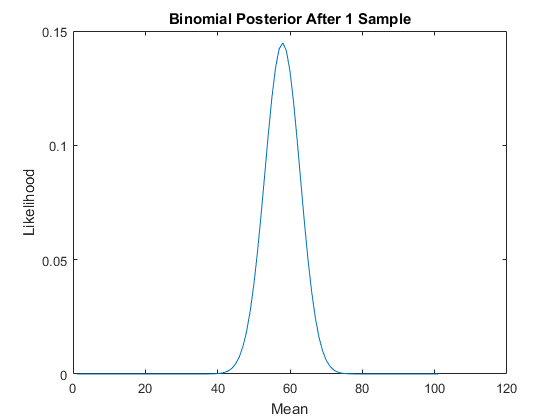 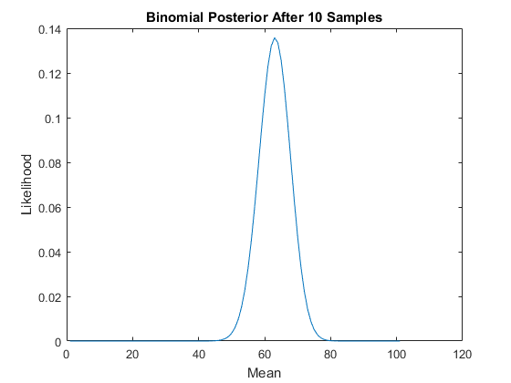 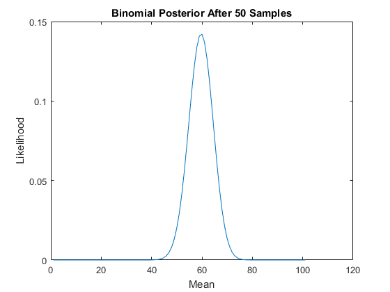 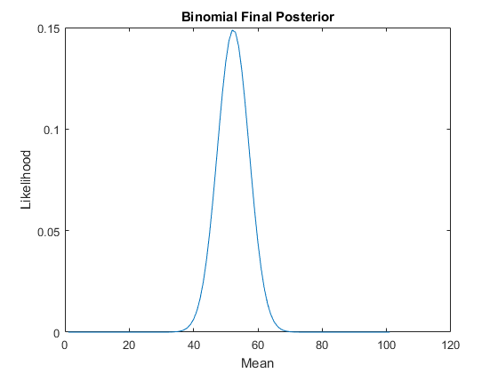 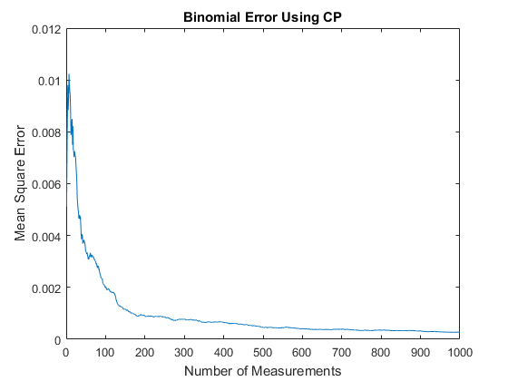 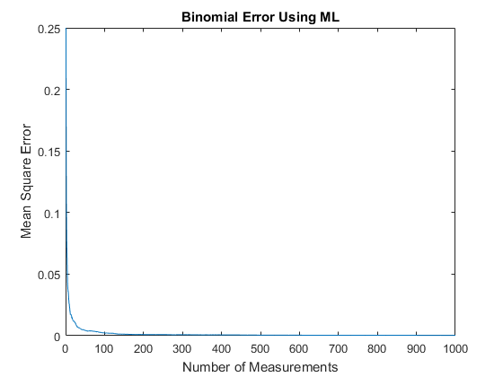 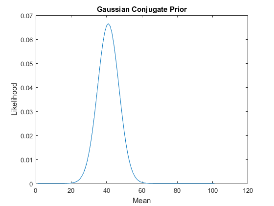 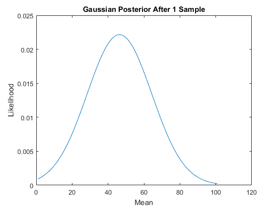 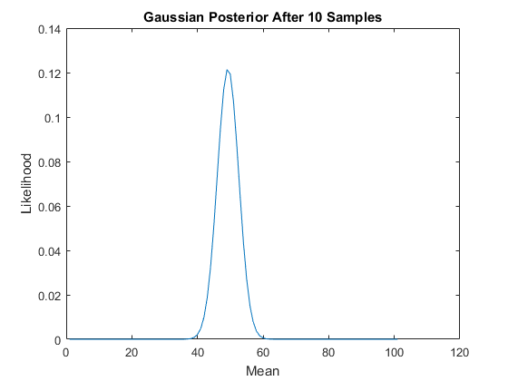 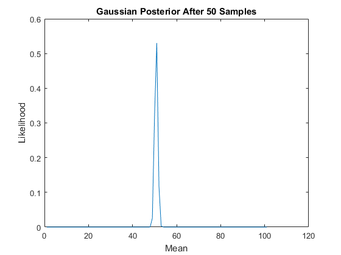 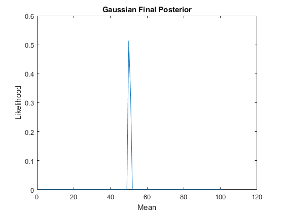 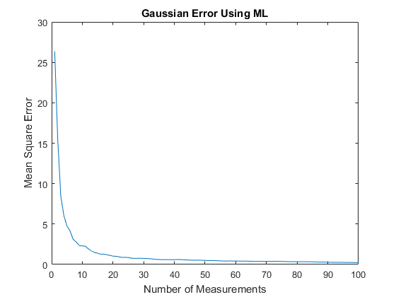